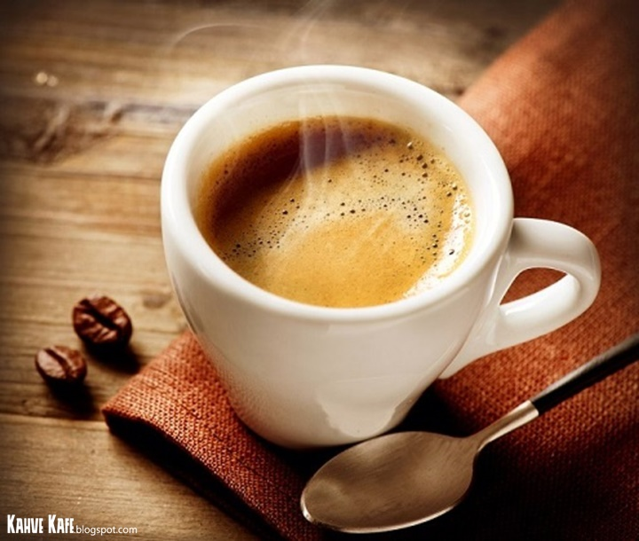
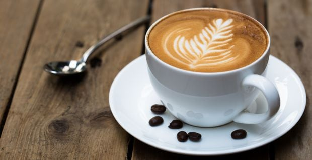

𝕰𝖘𝖕𝖗𝖊𝖘𝖘𝖔 𝖔𝖗 𝕾𝖍𝖔𝖗𝖙 ğ•ğ–‘ğ–†ğ–ˆğ–
It is the foundation for most of the different types of coffee, it is the purest form and it certainly isn’t for everybody. The key for a good espresso is a good brewing process, it is served one shot of espresso in an espresso cup.

𝕯𝖔𝖚𝖇𝖑𝖊 𝕰𝖘𝖕𝖗𝖊𝖘𝖘𝖔 𝖔𝖗 𝕯𝖔𝖕𝖕𝖎𝖔
It consists in two shots of espresso in just one cup. It has a strong and heavy flavor.
𝕸𝖆𝖈𝖈𝖍𝖎𝖆𝖙𝖔
Depending on where in the world you are, it might have different processes, but the traditional way to prepare a macchiato is with one shot of espresso and a dollop of steamed milk and foam on top of the espresso.

𝕽𝖎𝖘𝖙𝖗𝖊𝖙𝖙𝖔
It is a more concentrated and darker version of the espresso, it consists in a standard espresso shot, prepared with only half of the amount of water.

ğ•·ğ–”ğ–“𖌠ğ•ğ–‘ğ–†ğ–ˆğ– 𝖔𝖗 ğ•¬ğ–’ğ–Šğ–—ğ–ğ–ˆğ–†ğ–“ğ–”
This popular drink is a big favorite among all the different types of coffee. It is prepared by extracting one shot of espresso over a cup filled with 2/3rds of hot water.

𝕮𝖆𝖋é 𝕷𝖆𝖙𝖙𝖊
It is served in a cup or a tumbler glass, with 1 shot of espresso, steamed milk and 1 cm micro-foam on top of the milk. The steamed milk gives the Latte a sweet flavor.

𝕮𝖆𝖕𝖕𝖚𝖈𝖈𝖎𝖓𝖔
It is similar to the latte, the difference is that a Cappuccino has more foam (2-3 cm) on top, and chocolate sprinkle on top.
𝕱𝖑𝖆𝖙 𝖂𝖍𝖎𝖙𝖊
It is a traditional coffee in Australia and New Zealand, Flat White is very similar to the Cappuccino. The only difference between the two of them is that a Flat White doesn’t have any foam.
𝕻𝖎𝖈𝖈𝖔𝖑𝖔 𝕷𝖆𝖙𝖙𝖊
Commonly confused with a Macchiato, the Piccolo Latte consists in a shot of espresso served on an espresso cup, with steamed milk and a tiny portion of foam.
𝕸𝖔𝖈𝖍𝖆
It is one of the sweetest kinds among all different types of coffee. A Mocha consists in a shot of espresso mixed with a spoon of chocolate powder, on top you have to add steamed milk and 2-3 cm of foam, finally some sprinkles of chocolate powder.
𝕬𝖋𝖋𝖔𝖌𝖆𝖙𝖔
More than just a coffee, an Affogato is a dessert made of a single or double shot of espresso served over a scoop of vanilla ice-cream. It is served in a tumbler glass.
𝕴𝖗𝖎𝖘𝖍 𝕮𝖔𝖋𝖋𝖊𝖊
It is more commonly found on restaurants than in cafés because an Irish Coffee contains alcohol. This coffee is brewed with sugar, whiskey and a 2-3 cm layer of cream on top.